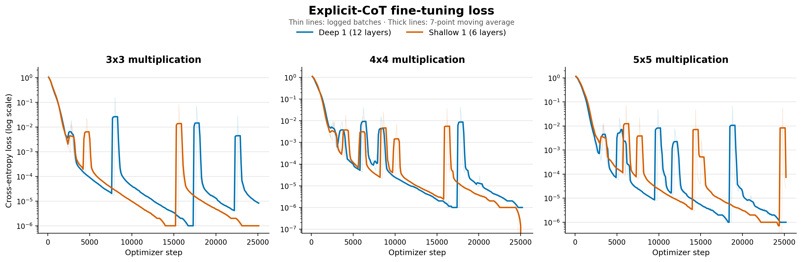

Serial Depth and Chain-of-Thought Internalization
Parameter-matched models with different transformer depths.
Working results
We trained 2 small models to similar losses to investigate the effects of lower serial depth on CoT internalization. Our motivation is creating an information bottleneck whereby models must reason over token-space instead of uninterpretable layer space. Our specific experiment is training a model with standard depth (Deep 1, 12 layers) and a model with shallow depth (Shallow 1, 6 layers).
Deep 1 and Shallow 1 both reach 100% accuracy on n×n digit multiplication when generating an explicit CoT reasoning trace. However, after an internalization treatment (following the method in From Explicit CoT to Implicit CoT), Shallow 1 achieves 0.6% 5×5 digit multiplication ability whereas Deep 1 achieves 96.3% accuracy.
Additional examination might test shallow model ability on other CoT 100% tasks, such as GSM-8k, under internalization conditioning. This would probably give us signal on other relevant domains in which internalization is a scheming risk.
Training curves

